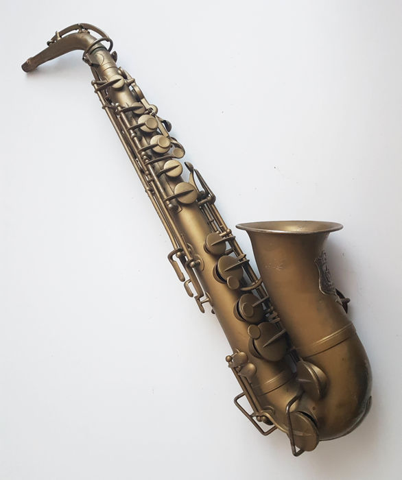
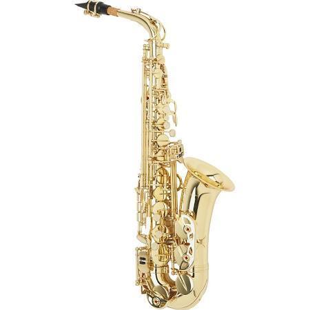

SAXOPHONE
Saxophone, any of a family of single-reed wind instruments ranging from soprano to bass and characterized by a conical metal tube and finger keys. The first saxophone was patented by Antoine-Joseph Sax in Paris in 1846. The reason saxophones are considered part of the woodwind family is because of the use of an oscillating wood reed to generate sound waves, as opposed to just one's use of their lips and airflow.
A saxophone has a conical metal (originally brass) tube with about 24 openings controlled by padded keys; the mouthpiece is similar to that of a clarinet. Two octave key vents allow the instrument to overblow to a higher register at the octave. Except for the sopranino and one form of the B♭ soprano saxophone, built straight like a clarinet, saxophones have an upturned lower end and a detachable crook, or neck, at the upper end.
Sax left no historical account of his invention, which was intended for both military bands and orchestras and which may have stemmed from experiments with reed mouthpieces on brass instruments. He quickly procured its official adoption by the French army, and it soon spread to other countries. The saxophone was a popular solo instrument in the United States about World War I and was subsequently adopted in dance bands, becoming one of the most important solo instruments in the development of swing and other forms of jazz. Its use in big bands brought changes in mouthpiece design to produce a brighter, more penetrating sound. Modern instruments are also wider in bore than early ones.